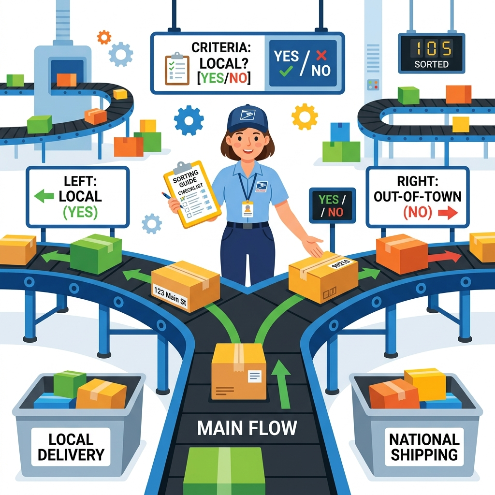
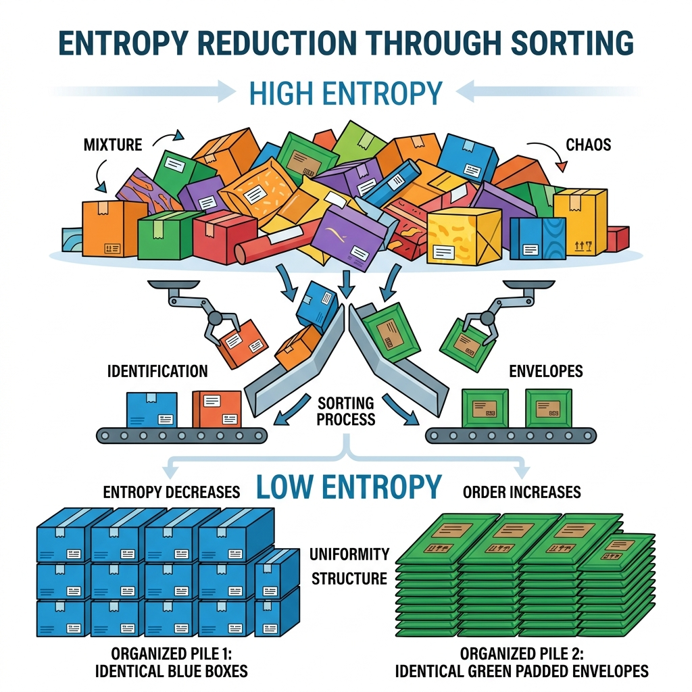
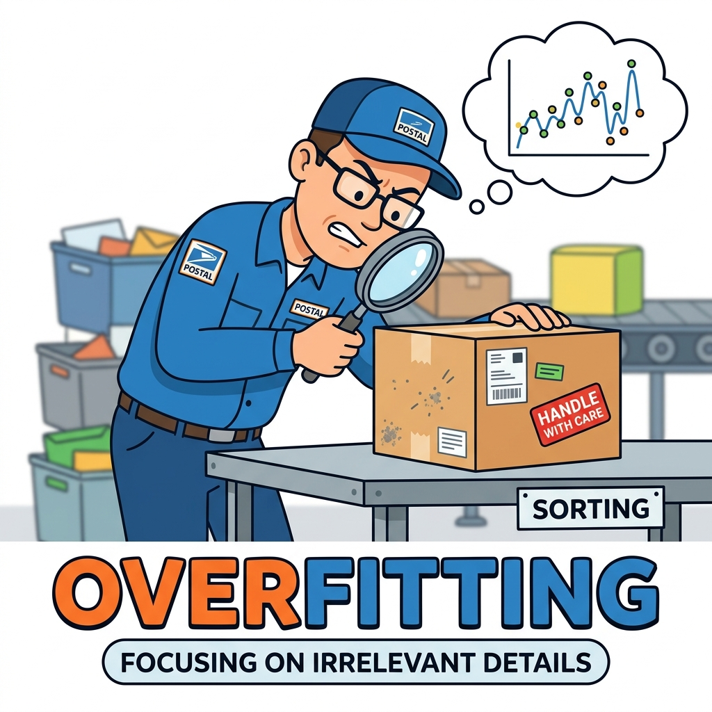
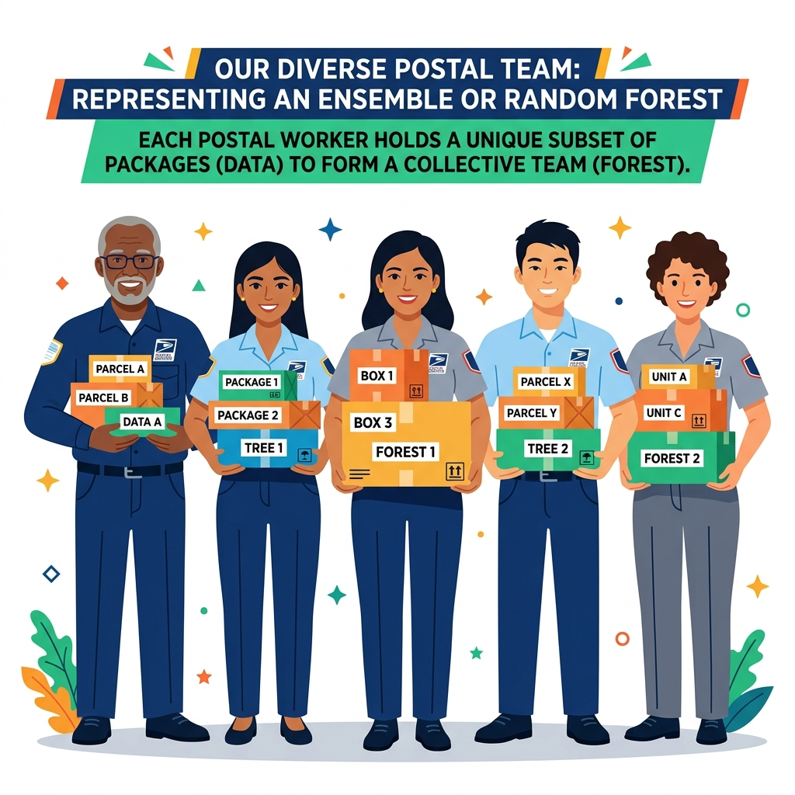
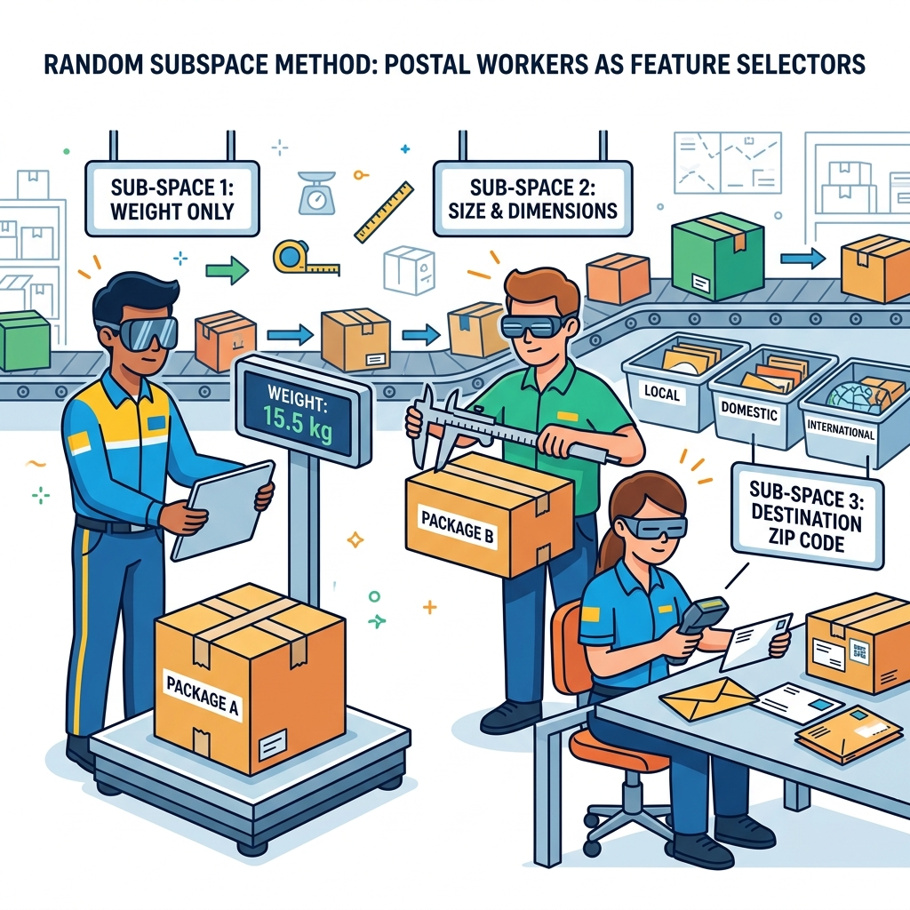
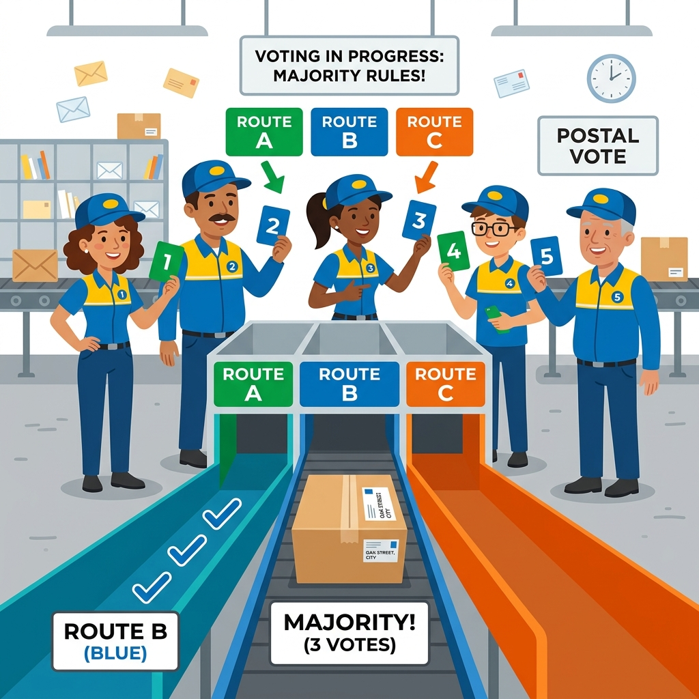
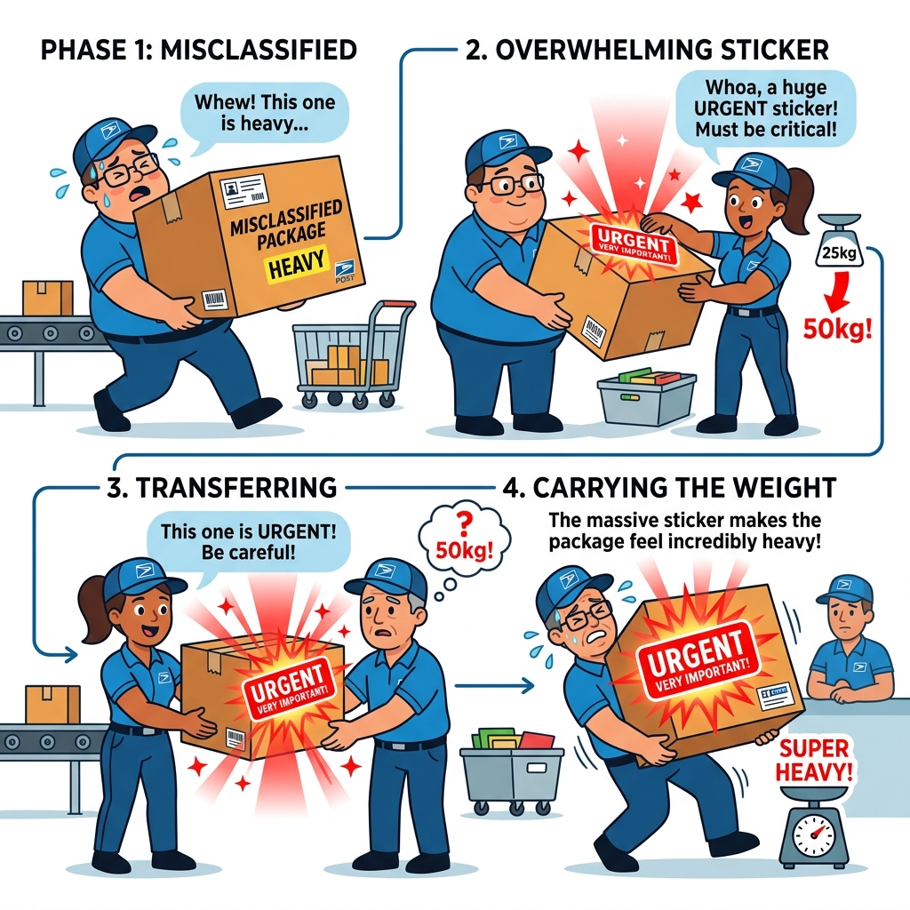
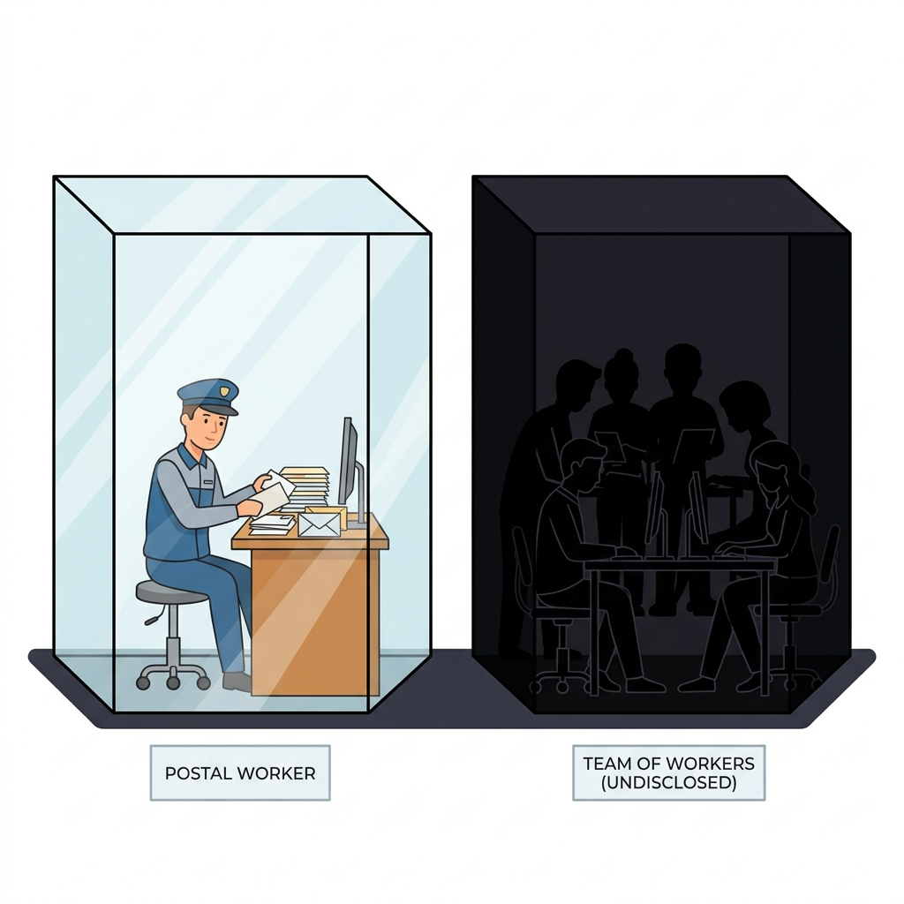
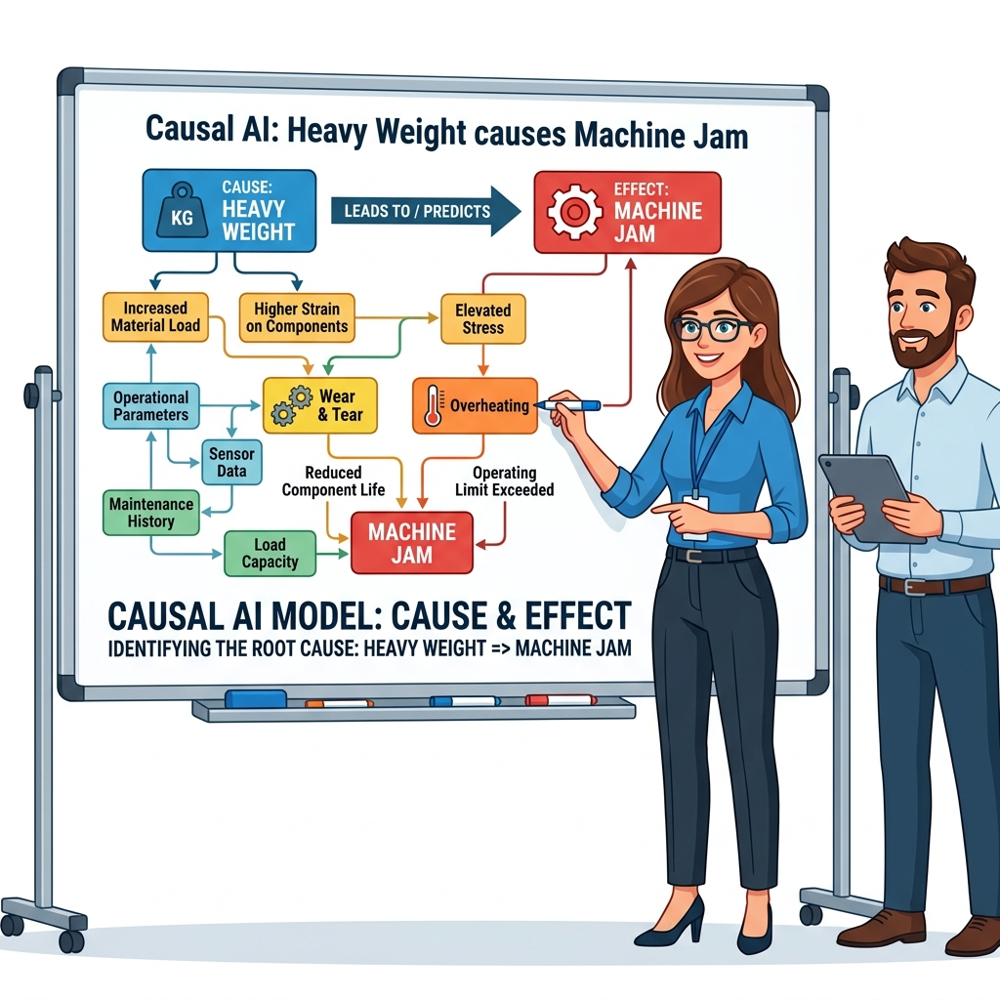

Zero to hero, from here Decision trees → Random Forest → AdaBoost → XAI/Causal intro
Decision Trees, Random Forests, and AdaBoost, with entropy computed by hand — framed by an early look at explainability and causality that Module 7 develops fully.
By the end of this module, you'll be able to
Compute entropy and information gain by hand, and explain why a tree picks one attribute to split on over another
Diagnose overfitting vs. underfitting in a tree, and explain what pruning actually removes
Explain why Random Forest injects randomness on purpose (bagging + random subspace), and how majority voting produces a confidence score
Walk through one full round of AdaBoost's reweighting math by hand, and contrast it with Random Forest's parallel voting
Tell glass-box from black-box models, and explain why a feature mattering to a model isn't the same as it causing the outcome
A messy pile of packages arrives at the post office. We need a system to correctly route each package to Standard, Fragile, or Priority.

2. The Single Sorter
Decision Tree
A single worker routes packages using a simple checklist: "Is it heavy? If yes, is it fragile?" This is interpretable and easy to follow.

3. Entropy & Information Gain
Splitting Criterion
The worker asks the most informative question first to reduce chaos (Entropy). Splitting "Local vs International" organizes the pile much faster than asking "Is the box blue?"

4. Overfitting & Pruning
Regularization
The worker gets obsessed with tiny smudges and memorizes every single package instead of learning general rules. Pruning stops this overcomplication!

5. The Sorting Team
Random Forest
A single worker makes mistakes, so we hire a whole team! By combining multiple workers (an ensemble), we get much better overall accuracy.

6. Bagging & Random Subspace
Ensemble Diversity
To keep workers diverse, each gets a random subset of packages (Bagging) and is only allowed to look at certain features like weight or size (Random Subspace).

7. Majority Voting
Inference Time
When a new package arrives, every worker independently decides where it should go. The final decision is made by a majority vote!

8. Reweighting
AdaBoost
Instead of working independently, workers form a line. If the first worker misclassifies a package, it gets a massive URGENT sticker (reweighting) so the next worker focuses extra hard on it.

9. Glass Box vs Black Box
Interpretability Dilemma
A single worker (Decision Tree) is a transparent 'Glass Box'. The entire voting team (Random Forest) is highly accurate but a mysterious 'Black Box'.
10. The Inspector
Explainable AI (XAI)
Since we can't easily see how the whole team votes, we hire an Inspector (XAI) to calculate which features—like 'weight'—had the biggest impact on the final decision.

11. Root Cause
Causal AI
The manager steps in to find the root cause of delays. Instead of just finding correlations, Causal AI proves that 'Heavy Weight' actively causes 'Machine Jams', allowing us to intervene.
1
Decision Trees
Classification is supervised learning: learn the pattern, predict the label.
1. The Analogy Recap
The Single Sorter: A single worker routes packages using a simple checklist ("Is it heavy? If yes, is it fragile?"). It's transparent and easy to follow, but prone to making mistakes if the checklist gets too long (overfitting).
Key Terms
Overfitting: Memorizing the training data perfectly, but failing completely on new, unseen data (like memorizing an answer key instead of learning).
Underfitting: When a model is too simple and fails on both training and new data.
Pruning: Cutting off the deep, overly-specific branches of a tree to stop it from overfitting.
Entropy / Information Gain: Entropy is the mathematical measurement of "chaos" or mixed-up labels. Information Gain is how much a specific question reduces that chaos.
2. The Code Reality
Python (Scikit-Learn)
from sklearn.tree import DecisionTreeClassifier
# min_samples_leaf=3 stops the tree from memorizing every single row (Pruning)
clf = DecisionTreeClassifier(criterion="entropy", min_samples_leaf=3)
# X_train = The inputs/features (e.g., patient's age, weight, blood pressure)
# y_train = The answers/labels we want to predict (e.g., "Sick" or "Healthy")
clf.fit(X_train, y_train)
Quick Example: Information Gain
Imagine 4 Birds and 3 Mammals.
Split on "Color"Brown animals are a mix of Birds/Mammals. White animals are a mix. Chaos remains high. (Low Information Gain)
Split on "Flies?"If Yes -> All Birds (Pure!). If No -> 1 Bird, 3 Mammals. Chaos is massively reduced! (High Information Gain)
The tree algorithm calculates Entropy (math for chaos) and always chooses to split on the feature (like "Flies?") that drops the entropy the most.
3. Exam Cheat Sheet
Entropy & Information Gain: Entropy measures chaos. Information gain measures how much a question reduces that chaos. The tree always picks the question with the highest Information Gain.
Overfitting vs Underfitting: If a tree is too deep, it memorizes the training data (overfits) and fails on new data. If it's too shallow, it underfits.
Decision Boundaries: A decision tree boundary is ALWAYS blocky and axis-aligned (rectangles), never diagonal or smooth.
2
Random Forests
Growing many different trees on purpose, then letting them vote.
1. The Analogy Recap
The Sorting Team: A single worker makes mistakes, so we hire a whole team! Each worker gets a random subset of packages (Bagging) and a random subset of features (Random Subspace). They all vote, and the majority wins.
Key Terms
Ensemble Learning: Combining many weak, simple models into one super strong model.
Bagging (Bootstrap Aggregating): Giving each tree a random subset of the training rows (with replacement) so they all learn slightly different things.
Random Subspace: Forcing each tree to only look at a random subset of the columns (features) at every split, guaranteeing that no two trees are identical.
2. The Code Reality
Python (Scikit-Learn)
from sklearn.ensemble import RandomForestClassifier
# n_estimators is the number of trees in the forest.
clf = RandomForestClassifier(n_estimators=100)
# X_train = Inputs (Features), y_train = Answers (Labels)
clf.fit(X_train, y_train)
Quick Example: Randomization
Why do we need randomization? Because if we gave 100 decision trees the exact same data, they would all build the exact same tree and vote the exact same way!
Bagging (Rows)Tree 1 gets random rows: [Patient A, Patient A, Patient C]. Patient B is left out! Tree 2 gets [Patient B, Patient C, Patient C].
Random Subspace (Columns)Tree 1 is only allowed to look at [Age, Blood Pressure]. Tree 2 is only allowed to look at [Weight, Heart Rate].
Because they see different data, their mistakes are totally different, making the final majority vote extremely reliable.
3. Exam Cheat Sheet
Ensemble Learning: Combining many weak models into one strong model.
Bagging: Sampling the training data with replacement so each tree sees slightly different data.
Random Subspace: Forcing each tree to only look at a random subset of features (e.g., only weight and size, but not color).
Confidence Score: If 80 out of 100 trees vote for class A, the model predicts class A with 80% confidence.
3
Adaptive Boosting (AdaBoost)
Build weak learners sequentially, each one fixing the last one's mistakes.
1. The Analogy Recap
Reweighting: Workers form a line. If the first worker misclassifies a package, it gets a massive URGENT sticker (reweighting) so the next worker focuses extra hard on it.
Key Terms
Decision Stump: A tiny decision tree that is only 1 level deep (makes exactly one split). Barely better than a coin flip!
Reweighting: The core math trick of AdaBoost. After every round, incorrectly predicted rows get their "weight" artificially increased so the next model is forced to fix the mistake.
ReweightingAdaBoost mathematically punishes the model! It shrinks the weight of the 4 correct patients, and massively boosts Patient #3's weight to 50%.
Round 2Stump #2 is now forced to prioritize Patient #3 above everything else.
At the end, all the stumps vote, but the stumps that made fewer mistakes get a louder say (higher alpha weight) in the final vote.
3. Exam Cheat Sheet
Sequential vs Parallel: Random Forest trains all trees at the same time (parallel). AdaBoost trains them one by one (sequential).
Decision Stumps: AdaBoost usually uses trees with a depth of 1 (just a single split).
Reweighting: After every round, incorrectly classified samples get their weights increased. Correctly classified samples get their weights decreased.
4
Explainability & Causality
Why did the model make that decision?
1. The Analogy Recap
The Inspector vs The Manager: The Inspector (XAI) tells you exactly which features (like weight) the Black Box used to make its decision. The Manager (Causal AI) figures out if weight actually caused the outcome, or if it was just a coincidence.
Key Terms
Glass-box Models: Models like Decision Trees that are 100% transparent. You can print the rules and read them like a book.
Black-box Models: Models like Random Forests or Neural Networks that are too mathematically tangled for a human to read.
Explainable AI (XAI): External mathematical techniques (like SHAP) used to probe a black-box model and force it to explain its decision.
Causal AI: Proving true cause-and-effect in the real world, rather than just spotting random correlations in a dataset.
2. The Code Reality
Python (Scikit-Learn)
# Glass-box models (like Decision Trees) explain themselves
importances = clf.feature_importances_
# Black-box models (like Neural Networks) need external tools like SHAP
import shap
# X_test = the new data we are making predictions on
explainer = shap.TreeExplainer(clf)
shap_values = explainer.shap_values(X_test)
Quick Example: Glass vs Black Box
If a bank denies your loan, they are legally required to tell you why.
Glass BoxA Decision Tree is fully transparent. You can print the tree and say: "You were denied because your income < 40k and missed_payments > 3."
Black BoxA Random Forest is opaque. The bank can't say "37 out of 100 trees didn't like you." We have to use a tool like SHAP to mathematically estimate which features hurt your score the most.
3. Exam Cheat Sheet
Glass-box vs Black-box: Decision Trees and Logistic Regression are transparent (glass-box). Random Forests and Neural Networks are opaque (black-box).
Explainable AI (XAI): Answers "What features did the model use to predict this?" (e.g., Feature Importance, SHAP).
Causal AI: Answers "What would happen if we changed this feature?" (Finding true root causes, avoiding confounders).
5
Sprint Exercise
The professor's actual hands-on assignment for this chapter, with solution.
Exercise 6 — Classification Pipeline with a Random Forest
Predicting cancer_type from cell-nuclei measurements and age (398 records). The notable part isn't the model — it's the discipline around it: a config dictionary declares every preprocessing/hyperparameter choice up front, before any code touches the data.
RandomForestClassifier(n_estimators=1000, max_depth=6, class_weight='balanced') reached 90% test accuracy. The exercise then asks students to drop n_estimators to 10 and watch performance degrade — a direct feel for how much ensemble size (§2) actually matters.
Gotcha
The final "production" model is refit on train+test combined — at which point you explicitly lose the ability to measure its accuracy. The earlier test-set score is your only honest estimate of how it'll perform.
6
Test Yourself
Retrieval practice — the single best-evidenced study technique there is.
Cover the answer, try to recall it from memory, then click to check. Getting it wrong and then reading the answer still strengthens the memory — skipping straight to the answer doesn't. Do this before your exam, not while reading for the first time.
In the 7-animal worked example (4 birds, 3 mammals), what is entropy(X) for the whole dataset before any split?
entropy(X) ≈ 0.9852 bits, computed from p(Bird)=4/7≈0.5714 and p(Mammal)=3/7≈0.4286.
In that same worked example, what are the information gains from splitting on fly versus color, and why is the gap so large?
gain(X, fly) ≈ 0.521 bits versus gain(X, color) ≈ 0.020 bits. The gap is large because fly carves out a perfectly pure subgroup (all 3 flyers are birds), while color never produces a pure branch — one branch is still a coin flip (entropy 1.0).
In the Random Forest worked example with N=100 trees, if 82 trees vote "Bird" and 18 vote "Mammal" for a new test animal, what does the forest predict, and with what confidence?
The forest predicts Bird with 82% confidence — the proportion of trees agreeing doubles directly as the confidence score, with no extra calculation needed.
In the AdaBoost worked example, the first stump misclassifies 1 of 5 samples (ε = 0.2). What is α, and what do the correctly-classified and misclassified sample weights become after reweighting and renormalizing?
α = ½·ln(4) = 0.6931. After reweighting and renormalizing, each correctly-classified sample's weight becomes 0.125 and the misclassified sample's weight becomes 0.5.
For the toy credit-scoring formula (score = 2.5 + 0.00004×income − 0.9×missed_payments), what are the individual contributions and final score for an applicant with $40,000 income and 3 missed payments, and is the loan approved?
Income contributes +1.6, missed_payments contributes −2.7, and the intercept contributes +2.5, giving a total score of 1.4. Since 1.4 > 0, the applicant is approved.
In the causal-confounder worked example, early-treated patients survive an average of 34 months versus 19 for late-treated patients. What variable is identified as the likely confounder, and why does it undermine the naive "early treatment causes longer survival" conclusion?
Disease severity is the confounder — early-treated patients averaged severity 3.2 versus 7.8 for late-treated patients. Severity independently affects both when treatment happens and how long the patient survives, so the 15-month gap may largely reflect "healthier patients get treated earlier and survive longer regardless of timing" rather than a causal effect of timing.
What test accuracy did the Sprint Exercise's RandomForestClassifier(n_estimators=1000, max_depth=6, class_weight="balanced") reach on the cancer_type dataset, and what follow-up manipulation does the exercise ask students to try?
It reached 90% test accuracy. The exercise then has students drop n_estimators to 10 and observe how much performance degrades, to feel how much ensemble size matters.
The Sprint Exercise's "Gotcha" callout warns about refitting the final "production" model on train+test combined. What do you lose by doing this, and what remains your only honest accuracy estimate?
You lose the ability to measure the refit model's accuracy, since no held-out data remains. The earlier test-set score, measured before that final refit, is your only honest estimate of real-world performance.
7
Exam Drill
Same skills as Test Yourself, but in the exam's actual answer format.
Real exams rarely ask you to write a paragraph — they ask you to name a technique in a couple of words, reorder scrambled steps, pick every correct item from a list, or fill in one line of code. These drills train that exact shape of answer, not just the underlying concept.
Name itAn ensemble method builds simple decision stumps one at a time, and each new stump is trained to focus on the examples the previous stumps got wrong. In ≤2 words, name it.
AdaBoost (or "boosting"). This sequential, mistake-correcting strategy is exactly what distinguishes it from Random Forest's parallel, independent trees (§2–3).
ReorderPut these AdaBoost steps in order:
A. Compute the stump's error rate ε and its say α
B. Initialize all sample weights equally
C. Reweight samples: shrink correct ones, grow misclassified ones
D. Train a decision stump on the current weights
E. Renormalize weights to sum to 1
B, D, A, C, E — initialize weights → train a stump → compute ε and α → reweight → renormalize, then repeat for the next round (§3).
Select allWhich of these are true about a single decision tree?
(a) its decision boundary is always axis-aligned/blocky
(b) it can express diagonal decision boundaries
(c) small changes in training data can produce a very different tree
(d) it's typically more accurate than a Random Forest
(e) pruning removes nodes to reduce overfitting
(a), (c), (e). Every split tests one feature against one threshold, so boundaries are always blocky, never diagonal (b is false). A single tree is unstable to data changes (§1's Limitations table), and a single tree is generally less accurate than an ensemble like Random Forest (d is false).
CodeComplete this to build a tree using entropy as the split criterion, with at least 5 samples required per leaf:DecisionTreeClassifier(criterion=____, min_samples_leaf=____)
criterion="entropy", min_samples_leaf=5 — the default criterion is "gini", a related but different impurity measure (§1).
ComputeA 4-record dataset has 3 records of class "Cat" and 1 of class "Dog." Compute entropy(X) in bits.